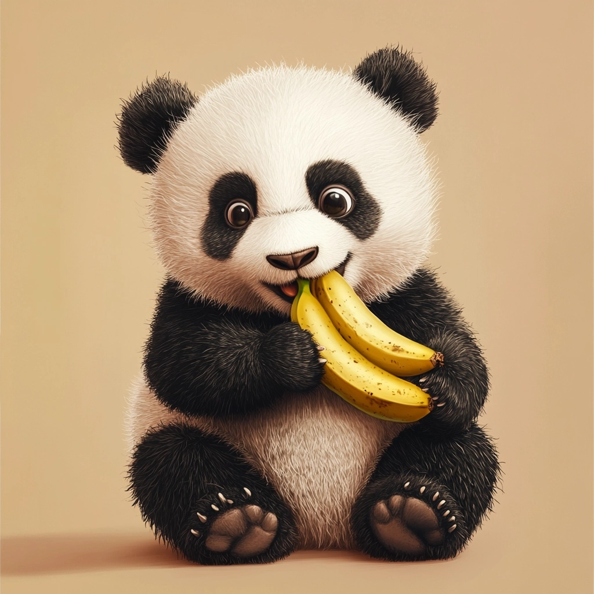

A cartoon panda is eating a banana. MidJourney 5
In 2023 The Economist published a way of talking about the climate cost of food that is easy to remember. Instead of reporting grams of CO₂, they express everything in bananas: how many times more carbon does a kilogram of this food emit than a kilogram of bananas? Today’s practice uses their published table of 160 foods.
They computed the index three ways, because “a kilogram of lettuce” and “a kilogram of beef” are not the same amount of food at all. They ranked the foods per kilogram, per thousand calories, and per hundred grams of protein. The three rankings disagree with each other.
This afternoon we will build all three rankings, compare them, and work out what it should mean to you when a food sits near the top of one list and nowhere near the top of the other two lists.
The Economist and Solstad, S., 2023. The Economist’s Banana index. First published in the article “A different way to measure the climate impact of food”, The Economist, April 11, 2023. The data are posted on GitHub, and bananaindex.csv downloads directly from their release page if you would rather not hunt through the repository for it. The copy we read below is that same file, unchanged.
Today’s two patterns
Almost every code cell in today’s practice is built from one of these two patterns, so you should only need to look them up once. After that, copy an earlier cell of your own and change the column name in it.
df[df['column'] > value] # the filter pattern
df.sort_values('column', ascending=False).head(n) # the top-N pattern, whole table
df['column'].sort_values(ascending=False).head(n) # the top-N pattern, one columnThe two top-N lines differ only in what you get back. The first keeps every column and reorders the rows, and the second gives you one column with its labels, which is easier to read when you only want to see the ranking. Use the second one for the ranking questions below.
Setup
Create a new notebook named
EOD_Day3_Banana_Index.ipynb.Add a title cell:
# Day 3 EOD: The Banana Index
Date: 09/02/2026Read the data, using
entityas the index. Theentitycolumn holds the food names, and making it the index means every ranking you print will be labelled with food names instead of row numbers.The file has five columns that are bookkeeping rather than data:
year,Banana values,type,Chart?, andUnnamed: 16. Remove them.
.drop() takes a list of column names and axis='columns', and returns a new DataFrame without them. Here is the whole line. Run it as written:
df = df.drop(['year', 'Banana values', 'type', 'Chart?', 'Unnamed: 16'], axis='columns')Two things in that line are worth noticing. The names go in a list, exactly like the lists you used to select columns yesterday. And axis='columns' tells pandas that you mean columns and not rows, because .drop() can remove either one.
Part 1: Get your bearings
Start the way you started yesterday. Answer each question in a markdown cell underneath the code that produced the answer.
- How many foods are in the dataset, and how many columns are left after the drop?
- Display the first few rows. What do the three columns whose names begin with
Bananas indexcontain? - Run
.info(). Two columns have missing values. Which, and how many? - What is the value of
Bananas index (kg)forBananasitself? Explain in a sentence why the number has to come out that way.
Part 2: Three rankings
Each of the three Bananas index columns gives you a different ranking of the same foods.
- Use the top-N pattern to display the 10 highest-scoring foods for
Bananas index (kg). - Do the same for
Bananas index (1000 kcalories). - Do the same for
Bananas index (100g protein).
Write each one out in full. Yes, you are writing out the same pattern three times with a single column name changed each time!
You just wrote the same line three times. Tomorrow morning we will learn how to write that line once, give it a name, and then call it three times, which means you get to edit it once instead of three times. Repeating yourself is exactly the itch that functions exist to scratch!
- In a markdown cell, describe in two or three sentences how the three lists differ from one another. What kind of food rises to the top when the denominator changes from a kilogram to a thousand calories, and what kind rises again when it changes to a hundred grams of protein?
Part 3: Which foods are on every list?
Question 8 was about how the lists differ. Now find what they agree on. Print the three top-10 lists again, one after another, and compare them by eye. In a markdown cell, write down the exact set of foods that appear in all three, and say how many foods appear on one list only.
Questions 8 and 9 asked what the lists say. Now say what it means. In a markdown cell, explain what you learn about a food from the fact that it sits near the top of all three lists at once, and what you learn about a food that tops one list and appears on neither of the others. Name one food of each kind from your answer to question 9, and say which of the two tells you more about the food itself rather than about the denominator.
Part 4: Filtering by score
Now we switch to the other pattern, the filter.
- Use the filter pattern to find every food with a
Bananas index (kg)above 10. How many are there?
~ and &, from this morning
The next three questions need the two operators we met in the filter session this morning, so here they are again in one place.
~ goes in front of a whole condition and turns it around. Every row the condition kept is dropped, and every row it dropped is kept:
df[~(df['column'] > value)]& joins two conditions, and each condition must have its own pair of parentheses around it. Leave them out and Python combines the wrong pieces and reports an error that has nothing to do with what you meant:
df[(df['column_a'] > value) & (df['column_b'] < other_value)]The difference between ~(x > 1) and x < 1 is the point of questions 12 and 13, so run both and look at the two numbers before you explain them.
Use
~to find the foods that are not above a score of 1 onBananas index (kg), that is, foods no worse than a banana by weight. How many are there?Now filter for
Bananas index (kg)below 1 instead. You should get a different number from the one you got in question 12. Explain the difference in one sentence.Use a two-condition filter to find the foods that score above 5 per kilogram and below 1 per 100 g of protein. End the line with
.copy(), because you will display the result a couple of different ways. Display the two banana index columns for those foods, ranked byBananas index (kg).In a markdown cell: what do the foods in question 14 have in common? What is the argument this table makes about how we should compare foods?
Part 5: Land, not carbon
The banana index columns are all about emissions. The dataset also has four land use columns, and the one we want is land_use_1000kcal, which gives square metres of land per thousand calories.
Use
.loc[]to look up the value ofland_use_1000kcalforBananas.Use the top-N pattern to display the 10 foods with the highest
land_use_1000kcal.Use
.idxmax()onland_use_1000kcalto get the name of the single most land-hungry food. Then use two.loc[]lookups and a division to work out how many times as much land that food needs as a banana does.Compare your land-use top 10 with your emissions top 10 from question 6. Both are measured per thousand calories, so they are the fair comparison. Are they the same foods? Answer in a markdown cell, and name one food that appears on one list and not the other.
Part 6: Cheese
The dataset has a lot of cheese in it. Cheese is worth a section of its own, because several cheeses show up alongside the beef and the lamb at the top of the emissions rankings, which is not where most people expect to find a dairy product.
- Build a table of just the cheeses, then find the cheese with the highest
Bananas index (1000 kcalories).
The food names are the index of your table rather than a column, so the filter pattern will not work on them. .filter() will. Given a substring, it keeps every row whose label contains that substring:
cheese = df.filter(like='heese', axis='rows')We use like='heese' rather than 'cheese' because matching is case-sensitive, and Cheesecake begins with a capital C that 'cheese' would miss. Run the line as written, then rank cheese with the top-N pattern exactly as you have been doing all along. Read the row labels you get back before you trust the table, because question 21 asks you what the match actually caught.
How many rows did
.filter(like='heese')give you? Look at the names carefully. Is every one of them a cheese? In a markdown cell, say what the result tells you about matching rows on text.Where does the top cheese sit in the whole dataset’s calorie ranking? Check it against your answer to question 6.
Part 7: Write it up
In a single markdown cell of 200 to 300 words, answer this:
A friend tells you they are cutting bananas out of their diet for environmental reasons. Using this dataset, what would you tell them?
Your answer must cite at least three specific numbers you computed here, and it must mention at least one place where the three rankings disagree with each other. Write your answer in complete sentences rather than in bullet fragments.
The grammar minute
Look back through your notebook. Almost every code cell you wrote was one of two patterns:
df[df['column'] > value] # filter: fewer rows
df.sort_values('column', ascending=False).head(n) # rank: same rows, new order, first fewEverything else was a variation. & and | joined two questions into one filter. ~ turned a question around. .idxmax() returned the label instead of the row. .loc[] looked up one value.
Two patterns got you through every question in today’s practice, and we will be writing both of them nearly every day for the rest of this course.
Wrap-up
Before you close your notebook, check that:
- every claim in your Part 7 write-up has a code cell above it that produced the number
- you used the filter pattern and the top-N pattern at least three times each
- you can say out loud what a filter with
&needs that a filter with one condition does not - your notebook reads top to bottom as a document, not as a pile of cells
If one of the 22 questions stumped you, or a cell would not run no matter what you tried, ask Cella or Kelly before you pack up. Getting stuck on a practice is normal and expected, and it is not a sign that you are behind!